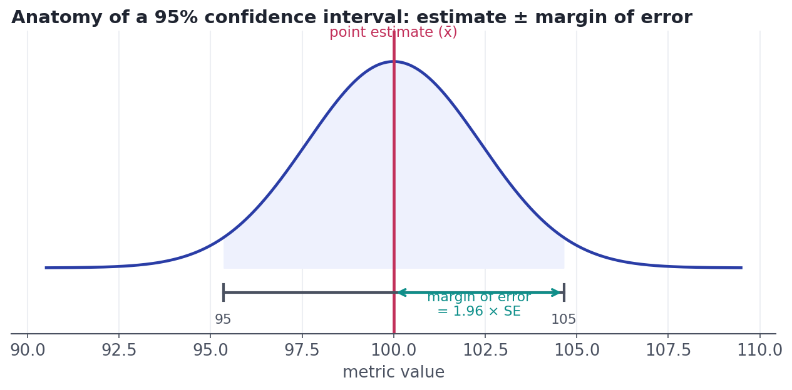
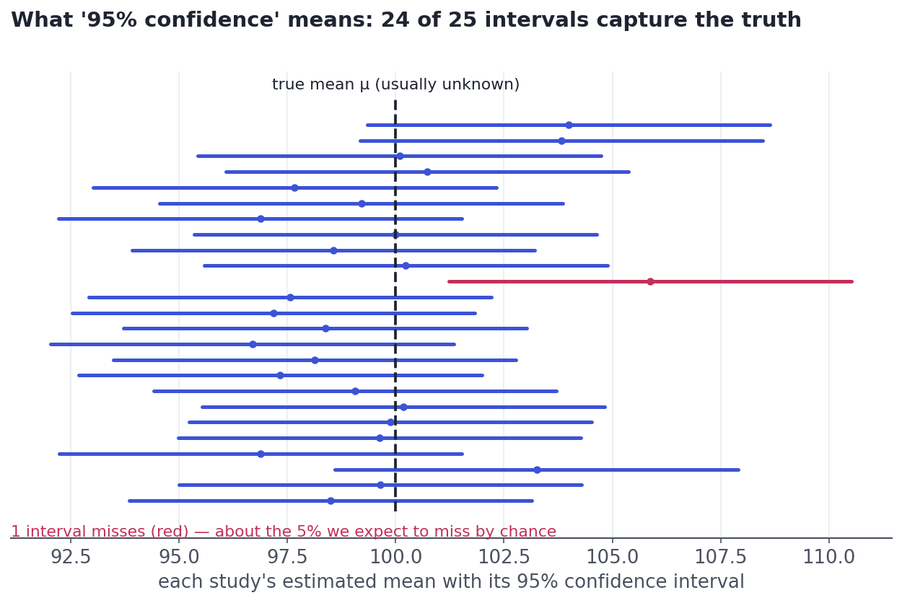

Estimation & Confidence Intervals
Turning a single sample into an honest range, and saying out loud what that range does and does not mean.
A single number pretends to a precision it doesn't have. 'Average checkout time is 42 seconds' sounds exact, but it came from a sample and would shift on a different day. A confidence interval replaces the false precision with an honest range — '42 seconds, give or take 3' — and tells you how much to trust it. This is how a professional reports a number.
ConceptPoint estimate vs. interval estimate
A point estimate is your single best guess for a parameter — usually just the sample statistic. The sample mean x̄ = 42s is a point estimate of the true mean μ. It's necessary but incomplete: it carries no hint of how far off it might be.
An interval estimate fixes that by reporting a range of plausible values. The most common kind is the confidence interval (CI): a range built from the data, with a stated confidence level (usually 95%) describing how often such ranges capture the truth.
Concept · the recipeBuilding a confidence interval
Every confidence interval has the same shape: take your estimate and add a cushion on each side for uncertainty. That cushion is the margin of error.
estimate ± (critical value × standard error). For 95% confidence and a decent sample size, t* ≈ 1.96 — straight from the normal curve of the CLT.
The three ingredients each have a job: the standard error (Lesson 4.5) sets the natural scale of the wobble; the critical value t* stretches it to the confidence you want (more confidence → wider interval); and the estimate centers it. Because the CLT makes x̄ approximately normal, the 95% figure comes from the empirical rule: about 95% of a normal distribution lies within ~1.96 standard errors of the center.

Concept · the interpretation everyone botchesWhat '95% confidence' actually means
This is the most misunderstood idea in statistics, and interviewers know it. The confidence is a property of the procedure, not of any single interval. If you repeated your study many times and built a 95% CI each time, about 95% of those intervals would contain the true parameter. The picture makes it unmistakable:

It is wrong to say 'there's a 95% probability the true mean is in this interval.' Once computed, your interval either contains μ or it doesn't — the truth isn't random. The 95% describes how often the method succeeds over many repetitions. Say: 'we're 95% confident the true value lies in this range,' meaning the procedure that produced it works 95% of the time.
Worked exampleCompute one from real data
Here's the whole calculation on a sample of 50 checkout times. Because we estimate the spread from the sample (we don't know the true σ), the correct critical value comes from the t-distribution — a slightly wider cousin of the normal that accounts for that extra uncertainty (more in the deep dive).
import numpy as np
from scipy import stats
rng = np.random.default_rng(3)
# 50 checkout times in seconds (we don't know the true mean or SD).
sample = rng.normal(42, 11, size=50)
n = len(sample)
xbar = sample.mean()
s = sample.std(ddof=1) # sample SD (ddof=1 -> the n-1 from Lesson 4.2)
se = s / np.sqrt(n) # standard error of the mean
t_star = stats.t.ppf(0.975, df=n-1) # 95% critical value from the t-distribution
margin = t_star * se
lo, hi = xbar - margin, xbar + margin
print(f"point estimate x-bar = {xbar:.1f} s")
print(f"standard error SE = {se:.2f} s (t* = {t_star:.2f})")
print(f"95% confidence interval: [{lo:.1f}, {hi:.1f}] = {xbar:.1f} ± {margin:.1f} s")point estimate x-bar = 42.3 s standard error SE = 1.72 s (t* = 2.01) 95% confidence interval: [38.8, 45.7] = 42.3 ± 3.4 s
Report it like this: 'Average checkout time is about 42 seconds (95% CI: roughly 39 to 45).' That one sentence gives the estimate and its uncertainty — everything a stakeholder needs to judge whether a 1-second 'improvement' is worth chasing.
★ Key points to remember
- A point estimate is a single best guess; a confidence interval adds an honest range of plausible values.
- CI = estimate ± (critical value × standard error). For 95%, the critical value is ≈ 1.96.
- Correct meaning: about 95% of intervals built this way capture the truth. Wrong: '95% probability the truth is in this interval.'
- Wider confidence → wider interval; larger n → smaller SE → narrower interval.
- When σ is estimated from the sample (the usual case), use the t-distribution for the critical value.
◆ Practice▸
Show solution & reasoning
95% CI ≈ 50 ± 1.96×2 = 50 ± 3.92, i.e. [46.1, 53.9]. Interpretation: if we repeated this study many times and built such an interval each time, about 95% of them would contain the true mean — so we're 95% confident the true mean is between about 46 and 54.
Show solution & reasoning
(1) The CI doesn't put 95% probability on any single value — and certainly not on the midpoint 20 specifically; the point estimate is just the center, not a 95%-likely value. (2) The 95% isn't the probability the truth is in this interval at all; it's the long-run capture rate of the procedure. Correct phrasing: 'we're 95% confident the true value is between 10 and 30,' and the interval is wide, so our estimate is imprecise.
◎ Deep dive: the t-distribution, the bootstrap, and the confidence–width trade-off▸
Why the t-distribution? The clean '1.96' assumes you know the true standard deviation σ. In reality you estimate it with the sample SD s, which is itself noisy — especially with small samples. The t-distribution accounts for that extra uncertainty by being slightly wider than the normal, with heavier tails. Its exact shape depends on the degrees of freedom (n−1): with few data points the tails are fat (critical value well above 1.96), and as n grows it converges to the normal. For n above ~30 the difference is small, which is why 1.96 is a fine shortcut for large samples.
The bootstrap: a CI with almost no math. When a formula is hard or assumptions are shaky, you can build a CI by brute force. Resample your data with replacement to make a new pretend-sample of the same size, compute the statistic, and repeat thousands of times. The middle 95% of those bootstrap statistics is your 95% confidence interval. It works for medians, ratios, and other statistics with no neat formula, and it makes the 'imagine repeating the study' idea literal — you're simulating the sampling distribution from the one sample you have.
Confidence vs. width trade-off. Want 99% confidence instead of 95%? The critical value jumps (from 1.96 to 2.58), so the interval widens. There's no free lunch: more confidence means a vaguer range. The only way to be both confident and precise is more data.
"Interpret this confidence interval" is a near-guaranteed question. Give the correct long-run interpretation (about 95% of such intervals capture the truth) and explicitly flag the wrong one ('not a 95% probability the truth is in this specific interval'). Add that wider confidence or a smaller sample makes the interval wider. That precision signals real understanding.